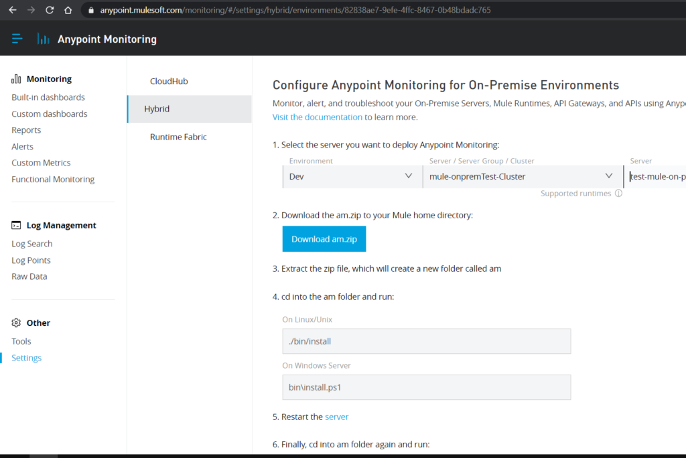
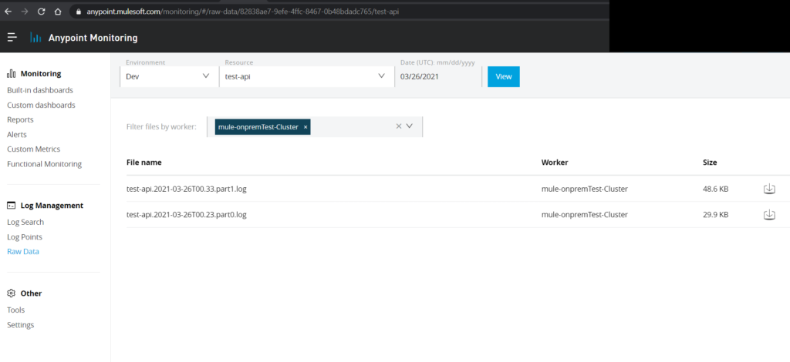
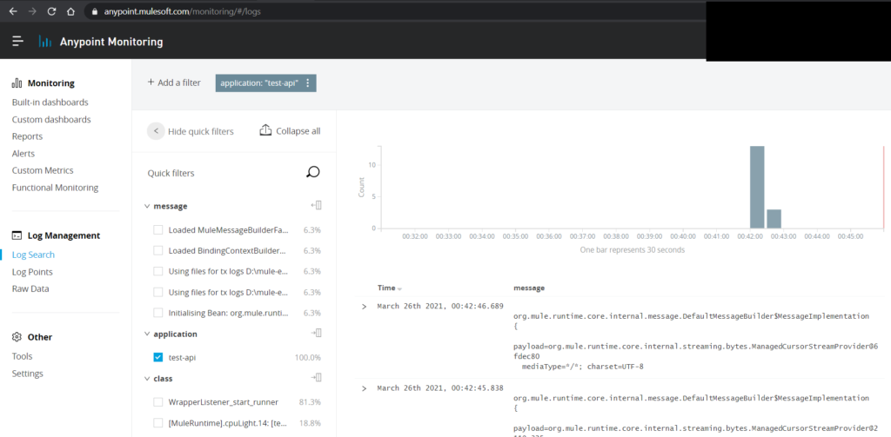

Anypoint Monitoring is the solution to monitor the applications deployed on your premise in the anypoint cloud platform replacing the old mule management console(MMC).
Installation Steps –
Before you begin –
https://docs.mulesoft.com/monitoring/am-installing#before-you-begin
Install the Anypoint Monitoring –
https://docs.mulesoft.com/monitoring/am-installing
Some Screenshots –



Performance Considerations –
Please note that anypoint monitoring could have some implecations on the performance of your on prem mule server as the installation occupies some memory and CPU capability as the AM agent runs on your server all the time. But from monitoring perspective its worth using it.
Also worth noting anypoint titanium subscription is required to monitor the logs in the monitoring section.